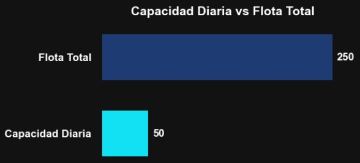
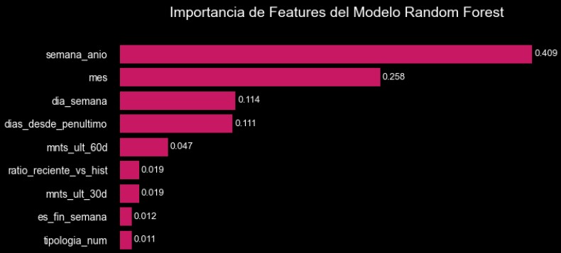
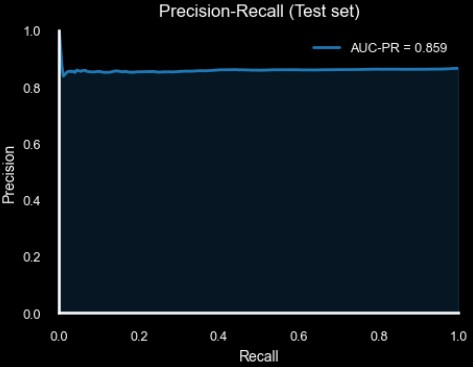
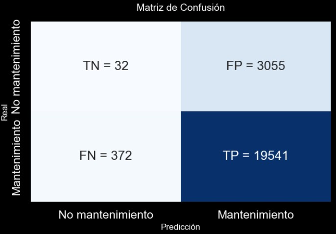

Sistema de Priorización Predictiva de Mantenimiento
Resumen
Se desarrolló un sistema de machine learning que prioriza diariamente qué vehículos deben ingresar a mantenimiento cuando la capacidad del taller es limitada. En lugar de solo clasificar si un vehículo necesita mantenimiento, el sistema genera un ranking de riesgo que permite seleccionar los casos más críticos.
El modelo fue optimizado para minimizar errores críticos (no detectar un vehículo que realmente requería mantenimiento) y fue evaluado completamente fuera de muestra antes de su despliegue.

Problema
La flota cuenta con aproximadamente 250 vehículos, pero solo es posible realizar mantenimiento a 50 por día. El desafío no es simplemente clasificar vehículos, sino priorizar correctamente bajo una restricción operativa de capacidad.
- Falso Negativo (crítico): El modelo indica que un vehículo no necesita mantenimiento, pero sí lo necesitaba. Puede generar fallas operativas y mayores costos.
- Falso Positivo (tolerable): El modelo prioriza un vehículo que finalmente no era urgente. Se utiliza capacidad de taller, pero no se produce una falla.
El sistema fue diseñado para minimizar falsos negativos, incluso si eso implica aceptar algunos falsos positivos.

Enfoque
El sistema se compone de dos capas:
Modelo Predictivo
- Feature engineering temporal (intervalos históricos, ventanas móviles, estadísticas acumulativas).
- División estricta por fecha para evitar data leakage.
- Random Forest con manejo de desbalance de clases.
- Evaluación completamente out-of-sample (train / validation / test).

Motor de Priorización
Las probabilidades generadas por el modelo se transforman en un ranking diario. Se seleccionan los 50 vehículos con mayor riesgo para convertir la predicción en decisión operativa.
Resultados (Test Out-of-Sample)
Dado que el costo principal es no detectar un vehículo crítico, la métrica clave es el recall de la clase prioritaria (requiere mantenimiento).
Resultados en conjunto de prueba:
- Recall clase prioritaria: 98% → El sistema detecta casi todos los vehículos que realmente necesitaban mantenimiento.
- Precision clase prioritaria: 86% → Cuando el modelo prioriza un vehículo, acierta en la mayoría de los casos.
- AUC-PR: 0.86 → Buena capacidad de ranking en un escenario desbalanceado.
Estos resultados indican que el sistema cumple su objetivo principal: reducir al mínimo los falsos negativos, que representan el mayor riesgo operativo.


“La matriz de confusión muestra que el modelo detecta correctamente la mayoría de los vehículos que necesitan mantenimiento (19,541 de 19,913). Aunque hay falsos positivos (3,055), los falsos negativos críticos son pocos (372), lo que valida que el modelo está optimizado para maximizar la seguridad operativa.”